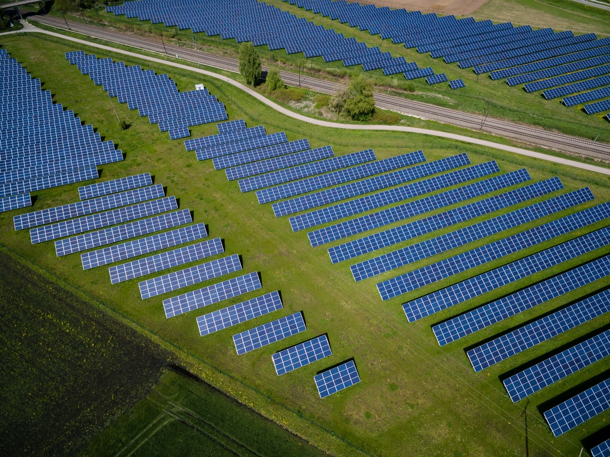

Carbon capture, utilisation and storage (CCUS) refers to a suite of technologies that can play an important and
diverse role in meeting global energy and climate goals. CCUS involves the capture of CO2 from large point sources,
including power generation or industrial facilities that use either fossil fuels or biomass for fuel.
The CO2 can also be captured directly from the atmosphere. If not being used on-site, the captured CO2
is compressed and transported by pipeline, ship, rail or truck to be used in a range of applications, or
injected into deep geological formations (including depleted oil and gas reservoirs or saline formations)
which trap the CO2 for permanent storage.

Economic Opportunies
Here at VTACK, we see immense opportunity, both in terms of economic opportunity and climate change action within the CCUS industry.
As leaders of the CCUS industry VTACK will contribute to clean and inclusive economic growth. Expand international market and trade opportunies.
Address the emissions from the toughest-to-abate but crucial sectors of the world's economy. Enable other pathways essential to decarbonisation
(e.g. electrification, hydrogen, nuclear). All can be achieved via CCUS negative emisisons technology.
Solutions
VTACK has developed two principle approaches to CCUS. Bioenergy with carbon capture and storage, or BECCS,
involves capturing and permanently storing CO2 from processes
where biomass (which extracts CO2 from the atmosphere as it grows) is burned to generate energy.
A power station fuelled with biomass and equipped with CCUS is a type of BECCS technology, as are facilities that process biomass into biofuels,
if the resulting CO2 is captured and stored. Direct air capture (DAC) involves the capture of CO2 directly from ambient air (as opposed to a point source).
The CO2 can be used, for example as a climate-neutral CO2 feedstock in synthetic fuels, or it can be permanently stored for carbon removal.